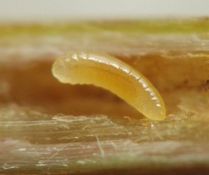
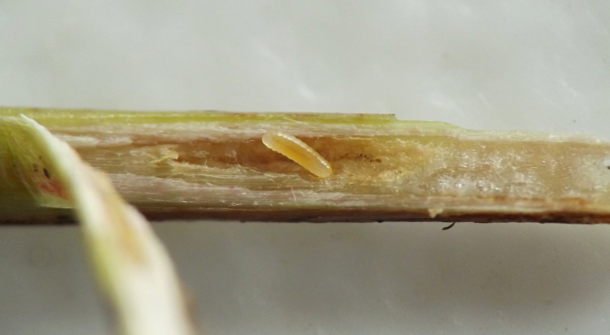
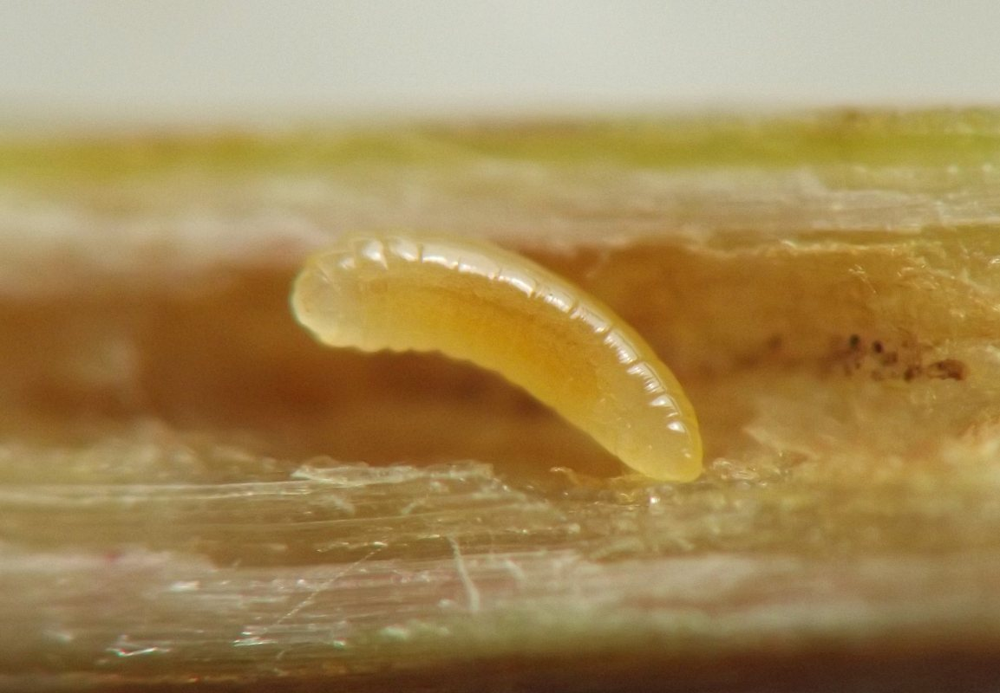
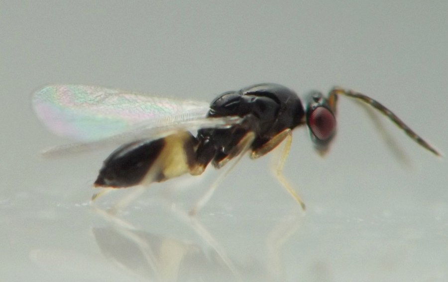
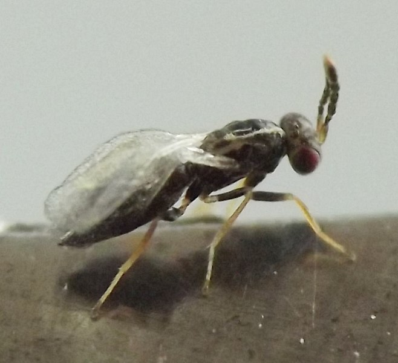
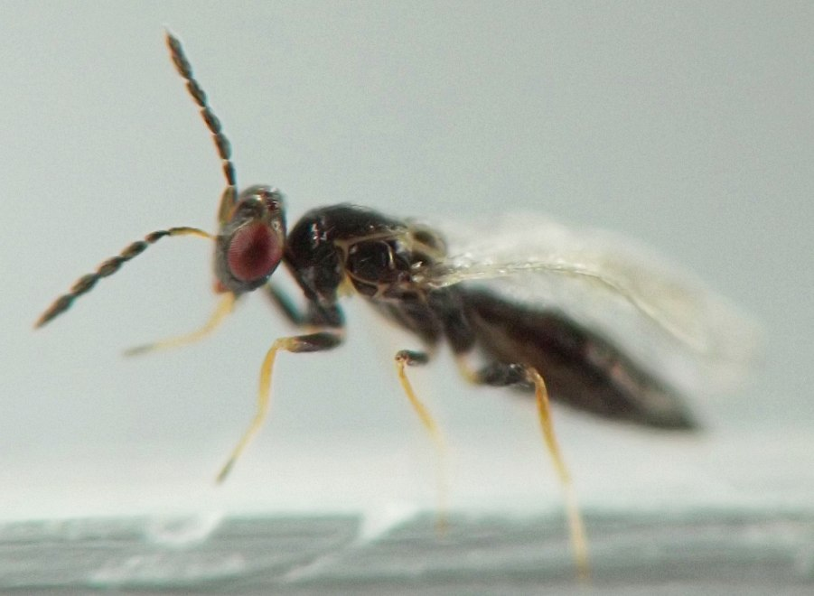
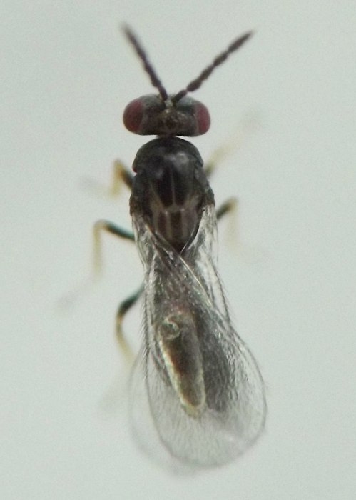
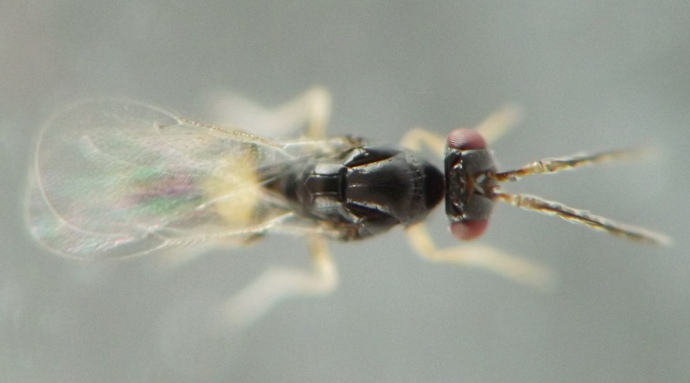
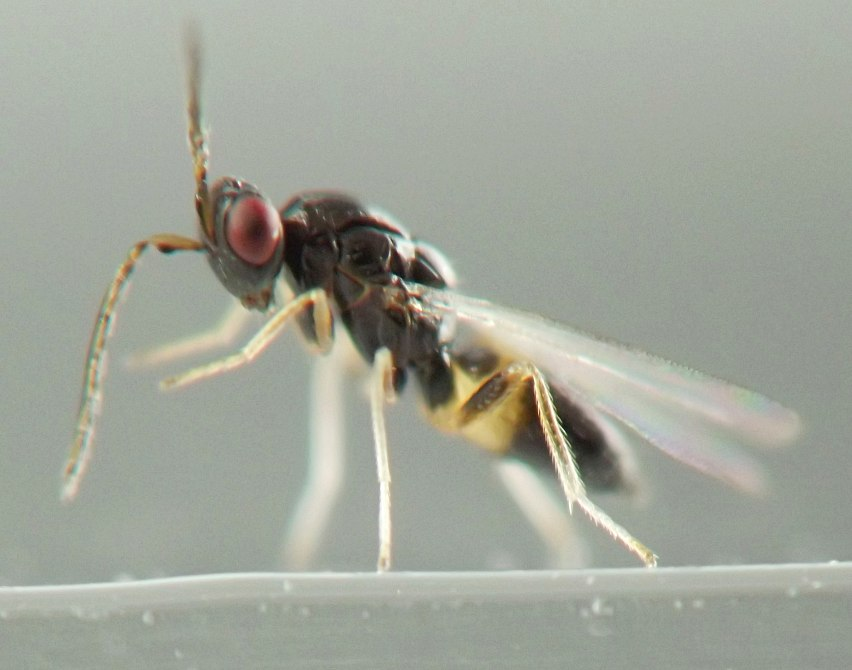

Internal feeder (Hymenoptera: Eulophidae: Tetrastichinae?) in stems of Hypericum
| Record no.: | 0285 |
|---|---|
| Feeding guild: | Internal feeder in stem |
| Taxonomy: | Undetermined (Hymenoptera: Eulophidae: Tetrastichinae?) |
| Stages observed: | trace, larva |
| Distribution observed: | IA |
| Hosts in Hypericum: | undetermined woodland H. sp. |

This record refers to tetrastichine eulophid wasp larvae I found in stems of an unidentified woodland Hypericum species at two different sites between 2021 and 2025. I believe the wasp may be phytophagous (evidence discussed below), but I am listing the insect taxonomy of this record as "undetermined" since I have been unable to eliminate the possibility that the wasp could be a parasitoid of another, as-yet unseen insect in the stems.
I first came across larvae of the wasp inside a stem of the host in mid-October, 2021. Several of the larvae were lined up along the length of the hollow stem interior. I successfully overwintered them inside the stem, and adults emerged in March 2022. Contributors on BugGuide.net identified two of the adults to family and then subfamily (Hill 2022a&b, Yoo 2024a&b).
Later, in winter 2023-2024 or 2024-2025 (exact date unrecorded), at a different location, I found more larvae overwintering in another stem of a woodland Hypericum.
In both instances, there was no direct or indirect sign of any other insect in the stems that could have served as a host for the wasp larvae if they were parasitoids. Searching other stems of the same plant in the vicinity also turned up no signs of other insects inside them. The stems showed no outward distortion or swelling. Finally, the way the wasp larvae were distributed through the stem interior was more suggestive of phytophagy than of entomophagy, as in the latter case, one might expect at least some larvae to be clustered near the remains of the host insect. Taken together, these results suggested to me that the larvae might be phytophagous.
Plant-eating tetrastichine eulophids are known from a variety of hosts and plant parts. Notable examples from North America involving stems include Aprostocetus smilax, which makes stem galls on Smilax havanensis in Florida, and an undetermined Aprostocetus sp. that feeds internally in stems of Melilotus (Viggiani and Monaco 2014; Gates et al. 2020). I have not been able to review the 1954 paper by Teitelbaum and Black in which the biology of the Melilotus feeder is described. However, La Salle (2005) discusses this paper briefly, mentioning that the wasp's sign on the host stem includes "small holes along older parts of stems, and slight swellings in the younger portions near the tips" (p. 515). Thus it appears that in parts of some occupied Melilotus stems, there is little or no visible swelling in response to the wasp's presence, and the main sign of inhabitation is the wasp's exit holes.
Although I believe the available evidence points to the Hypericum wasp being a plant feeder, I cannot yet definitively rule out the possibility that it is a parasitoid of some unseen insect whose sign I failed to discern despite searching for it. Van de Kerckhove (2002) reported Pnigalio sp. and Sympiesis sp. eulophids emerging from "small branches" (evidently including stems, leaves, and possibly flowers or fruit) of Hypericum edisonianum in Florida, with some of the branches from the collections also giving rise to weevils, leaf-mining moths, and scale insects.

 Prev
Prev
{kind=link}
{kind=link}

{kind=link}

{kind=link}

{kind=link}

{kind=link}

{kind=link}

{kind=link}

- Gates, M.W., Zhang, Y.M., and M.L. Buffington. 2020. The great greenbriers gall mystery resolved? New species of Aprostocetus Westwood (Hymenoptera, Eulophidae) gall inducer and two new parasitoids (Hymenoptera, Eurytomidae) associated with Smilax L. in southern Florida, USA. Journal of Hymenoptera Research 80: 71-98. https://doi.org/10.3897/jhr.80.59466[return to in-text citation]
- Hill, R. 2022a. Comment on contributor post at BugGuide.net. Retrieved June 5, 2026 from https://www.bugguide.net/node/view/2201504. [return to in-text citation]
- Hill, R. 2022b. Comment on contributor post at BugGuide.net. Retrieved June 5, 2026 from https://www.bugguide.net/node/view/2201507.
- La Salle, J. 2005. Biology of gall inducers and evolution of gall induction in Chalcidoidea (Hymenoptera: Eulophidae, Eurytomidae, Pteromalidae, Tanaostigmatidae, Torymidae). Pages 507-537 in Raman, A., Schaefer, C.W., and T.M. Withers (eds.). 2005. Biology, ecology, and evolution of gall-inducing arthropods, vols. 1-2. Science Publishers.[return to in-text citation]
- Van de Kerckhove, G.A. 2002. Factors affecting dieback in the rare plant Hypericum edisonianum (Edison's St. John's-wort) [Doctoral dissertation, University of Florida]. University of Florida Digital Collections.[return to in-text citation]
- Viggiani, G. and R. Monaco. 2014. Description of a new gall-inducing species of Aprostocetus (Hymenoptera: Eulophidae) on Melilotus indicus from southern Italy. Journal of Entomological and Acarological Research 46(1): 27-29.[return to in-text citation]
- Yoo, J. 2024a. Comment on contributor post at BugGuide.net. Retrieved June 5, 2026 from https://www.bugguide.net/node/view/2201504. [return to in-text citation]
- Yoo, J. 2024b. Comment on contributor post at BugGuide.net. Retrieved June 5, 2026 from https://www.bugguide.net/node/view/2201507.
Page created: June 5, 2026. Last update: June 5, 2026